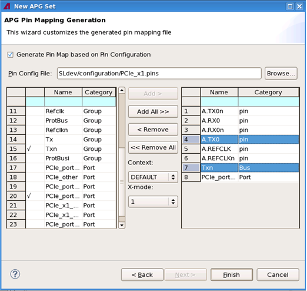
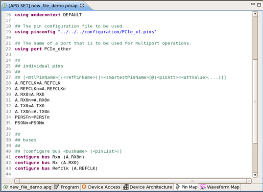

The APG Pin Mapping Generation wizard
This wizard is used to add pins from a SmarTest pin configuration file to an MTP pin mapping file during using MTP Wizard to create the pin mapping file.
The following picture shows the wizard:

Items on the wizard page are:
- Generate Pin Map based on Pin Configuration: Enables or disables the use of this wizard to create a pin mapping file based on a SmarTest pin configuration file. By default, it is unchecked, and the wizard is greyed out and invalid.
- Pin Config File: Lets you select a SmarTest pin configuration file.
- Context: Lists all context modes contained in the pin configuration file so that you can choose one for your pin mapping file.
- X-mode: Lets you select the default x-mode for all pins.
- Tables: Lets you customize the pin mapping file by adding pins from the SmarTest pin
configuration file (the left table) to the pin mapping file (the right table).
- The left table: Lists pins, pin groups, and ports in the pin configuration file.
- The right table: Lists pins that will be added to the generated pin mapping file.
To add pins, pin groups, or ports from the left table to the right table, use the Add or Add All buttons:
- Add: Adds the selected pins, pin groups, or ports from the left table to the right table. When pin groups are added to the right table, their Group attributes will be changed to Bus shown in the Category column in the right table according to the MTP rules.
- Add All: Adds all pins, pin groups, and ports from the left table
to the right table. When pin groups are added to the right table, their
Group attributes will be changed to Bus shown in the
Category column in the right table according to MTP rules.
Once pins are added to the right table, check marks will be put next to them in the left table.
To remove only the selected ones or all pins, buses and ports from the right table, use the Remove or Remove All buttons.
- Finish: When you have finished adding pins to the right table, click the Finish button. The MTP wizard will start to create the .apg file and all associated MTL setup files specified in the APG File Reference wizard. Pin mappings for the added pins are provided in the newly created pin mapping file.
- Back: Goes back to the previous page, the APG File Reference wizard.
Pin sorting and filtering
Both tables support sorting and filtering of pin so you can display them in the way you want to see them.
- To sort pins: Click the column heading (either Name or Category). The pins will be sorted in an ascending order (A to Z or smallest number to largest). Click the heading again to sort the pins in a descending order (Z to A or largest number to smallest).
- To filter pins: Enter the filter criteria (letters or numbers) in the cell in the second row of the Name or Category column. Pins that meet the sort criteria will be displayed in the table. The other pins will be hidden.
Example
The following figure displays the generated pin mapping file.

Functional changes
- Introduced in MTP 3.3.2